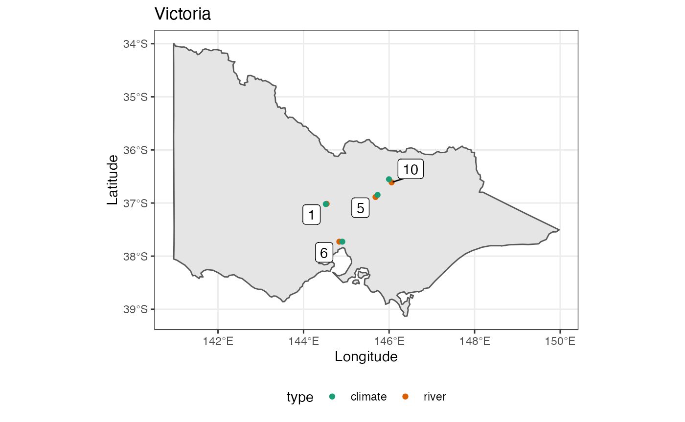

3. Application: matching
3-matching.RmdOne common type of task with spatio-temporal data is to match nearby sites. For example, we may want to verify the location of an old list of stations with current stations, or we may want to match the data from different data sources. Some of these matches only concern the spatial dimension, while others require temporal agreement.
This vignette introduces how to spatially and spatio-temporally match sites with the cubble structure with two examples. The first example pairs traditional weather stations with nearby automated stations in New South Wales, Australia. This exercise only concerns the matching based on spherical distance between stations. The next example pairs the river level recorded by the river gauges with the precipitation recorded by the nearby weather station in Victoria, Australia.
Spatial matching
The figure below shows the location of traditional and automated weather station on the map of New South Wales:

In the map we can see some traditional and automated weather stations are close to each other. This can be useful information to cross validate recordings from different types of weather stations.
In cubble, match_sites() houses match_spatial() and match_temporal(). For a spatial-only matching, you can use match_sites(temporal_matching = FALSE) or simply match_spatial().
Any matching requires two datasets in the cubble and we call them major and minor. Major and minor dataset differs from how distance is calculated. Spatial matching calculates the spherical distance using the Vincenty formula and this distance is calculated from each site in the major dataset is to every site in the minor dataset.
Once the distance is calculated, three arguments are available to refine the matching results:
-
spatial_n_keep: Number of match each major site receive -
spatial_dist_max: maximum distance allowed for a pair of matching -
spatial_single_match: Whether each minor site can only be matched to one major site
The order that these three arguments applied will slightly affect the results in cubble. spatial_n_keep, default to 1, is first applied to keep n site(s) for each major site, spaital_dist_max, default to 10, is then applied to filter out the pairs with distance larger than this maximum distance. spatial_single_match is lastly applied to resolve the scenario where site a (minor) is the closest match for both site A and B (major) with distance 5km and 8km. If spatial_single_match = TRUE, a will only be matched to the major site with the smaller distance, that is, site A here.
Let’s get back to the weather stations.
We first construct the major site auto and minor non_auto by filtering on whether stations are automated or not. Here we would like to find each station in auto a match in non_auto. Hence auto is the major dataset and non_auto is the minor in the match_sites():
nsw
#> # cubble: id [111]: nested form
#> # bbox: [141.26, -37.27, 153.64, -28.63]
#> # temporal: date [date], prcp [dbl], tmax [dbl], tmin [dbl]
#> id lat long elev name wmo_id automated ts
#> <chr> <dbl> <dbl> <dbl> <chr> <dbl> <lgl> <list>
#> 1 ASN00046128 -31.1 142. 181 fowlers gap aws 94686 TRUE <tibble>
#> 2 ASN00047016 -34.0 141. 43 lake victoria storage 94692 FALSE <tibble>
#> 3 ASN00047019 -32.4 142. 61 menindee post office 94694 FALSE <tibble>
#> 4 ASN00047029 -33.4 143. 53 pooncarie mail agency 95692 FALSE <tibble>
#> 5 ASN00047048 -32.0 141. 281. broken hill airport … 94691 TRUE <tibble>
#> 6 ASN00048015 -30.0 147. 115 brewarrina hospital 95512 FALSE <tibble>
#> 7 ASN00048027 -31.5 146. 260 cobar mo 94711 FALSE <tibble>
#> 8 ASN00048079 -29.7 144. 108 wanaaring post office 94497 FALSE <tibble>
#> 9 ASN00048237 -31.5 146. 218 cobar airport aws 94710 TRUE <tibble>
#> 10 ASN00048243 -29.4 148. 154 lightning ridge visi… 94498 FALSE <tibble>
#> # … with 101 more rows
auto <- nsw %>% filter(automated)
non_auto <- nsw %>% filter(!automated)
matched <- match_sites(auto, non_auto, temporal_matching = FALSE) The result from the pairing is also a cubble with two additional columns: dist as the distance between the pair and group as the grouping index:
matched
#> # cubble: id [20]: nested form
#> # bbox: [145.79, -36.11, 151.67, -30.52]
#> # temporal: date [date], prcp [dbl], tmax [dbl], tmin [dbl]
#> id lat long elev name wmo_id automated ts dist group
#> <chr> <dbl> <dbl> <dbl> <chr> <dbl> <lgl> <list> <dbl> <int>
#> 1 ASN00050137 -33.1 147. 193. condobo… 95708 TRUE <tibble> 1.41 1
#> 2 ASN00050052 -33.1 147. 195 condobo… 94707 FALSE <tibble> 1.41 1
#> 3 ASN00056238 -30.5 152. 1079 armidal… 95773 TRUE <tibble> 5.16 2
#> 4 ASN00056037 -30.5 152. 987 armidal… 94773 FALSE <tibble> 5.16 2
#> 5 ASN00064017 -31.3 149. 643 coonaba… 95728 TRUE <tibble> 6.58 3
#> 6 ASN00064008 -31.3 149. 505 coonaba… 94728 FALSE <tibble> 6.58 3
#> 7 ASN00048237 -31.5 146. 218 cobar a… 94710 TRUE <tibble> 6.86 4
#> 8 ASN00048027 -31.5 146. 260 cobar mo 94711 FALSE <tibble> 6.86 4
#> 9 ASN00070330 -34.8 150. 640 goulbur… 95716 TRUE <tibble> 7.03 5
#> 10 ASN00070263 -34.7 150. 670 goulbur… 94716 FALSE <tibble> 7.03 5
#> 11 ASN00066194 -33.9 151. 3 canterb… 94766 TRUE <tibble> 7.14 6
#> 12 ASN00066037 -33.9 151. 6 sydney … 94767 FALSE <tibble> 7.14 6
#> 13 ASN00068192 -34.0 151. 73.9 camden … 94755 TRUE <tibble> 8.17 7
#> 14 ASN00068257 -34.1 151. 112 campbel… 94757 FALSE <tibble> 8.17 7
#> 15 ASN00072160 -36.1 147. 164. albury … 95896 TRUE <tibble> 8.33 8
#> 16 ASN00072023 -36.1 147. 184 hume re… 94901 FALSE <tibble> 8.33 8
#> 17 ASN00067113 -33.7 151. 24.7 penrith… 94763 TRUE <tibble> 8.77 9
#> 18 ASN00063077 -33.7 151. 320 springw… 95744 FALSE <tibble> 8.77 9
#> 19 ASN00063291 -33.4 150. 744. bathurs… 94729 TRUE <tibble> 9.30 10
#> 20 ASN00063005 -33.4 150. 713 bathurs… 94730 FALSE <tibble> 9.30 10Then we can create visualisation to see where these pairs are in the map:
plot_map(nsw_map) +
geom_point(data = matched,
aes(x = long, y = lat, color = automated)) +
ggrepel::geom_label_repel(data = matched %>% filter(automated),
aes(x = long, y = lat, label = group)) +
scale_color_brewer(palette = "Dark2") +
ggtitle("New South Wales") +
theme_minimal() +
theme(panel.grid.major = element_blank(),
panel.grid.minor = element_blank()) +
coord_sf(xlim = c(141, 154))
or compare the series within the same pair (as an example here we only look at records in Jan 2020):
We can see that in general the maximum temperatures recorded in traditional and automated stations from our pairs are matched. There’s a constant gap in pair 9, which suggests the two stations may need to be further calibrated.
Spatio-temporal matching
Bureau of Meteorology collects water data from river gauges and this includes variables: electrical conductivity, turbidity, water course discharge, water course level, and water temperature. In particular, water level will interactive with precipitation from the climate data since rainfall will raise the water level in the river. Here is the location of available weather station and water gauges in Victoria:
Here we provide more details on how temporal matching works in cubble. Suppose two locations have been matched spatially and temproal matching will be conducted on variable A and a in the plot below: .

We first find the n peaks in each series (3 peaks here). A variable needs to be specified in temporal_independent for construct an interval. Here we pick variable A and construct an interval with a default length of 5. The peaks in variable a are then tested against whether they fall into the any of the intervals constructed from A. In this illustration, there are 2 matches for these two variable The available tuning parameter in temporal matches are:
-
temporal_n_highest: the number of peak used - 3 in the example above -
temporal_window: the length of the interval - 5 in the example above -
temporal_min_match: the minimum number of matched peak for a valid matched pair. To return all the pairs of the match, set this parameter to 0.
In the river level and precipitation example, Water_course_level in river will be matched to prcp in climate. This can be specified in temporal_by, an analogue to the by syntax in join. The goal in this example is to see if precipitation will be reflected by the water level in the river and this puts precipitation prcp, as the independent. Given there is one year worth of data, the number of peak (temporal_n_highest) to consider is slightly raised from a default 20 to 30 and temporal_min_match is raised accordingly.
res <- match_sites(river, climate,
temporal_by = c("Water_course_level" = "prcp"),
temporal_independent = "prcp",
temporal_n_highest = 30,
temporal_min_match = 15)The output from temporal matching is also a cubble with n_match for the number of matched temporal peaks (on top of the dist and group from spatial matching)：
res
#> # cubble: id [8]: nested form
#> # bbox: [144.52, -37.73, 146.06, -36.55]
#> # temporal: date [date], matched_var [dbl]
#> id name lat long type dist group ts n_match
#> <chr> <chr> <dbl> <dbl> <chr> <dbl> <int> <list> <int>
#> 1 405234 SEVEN CREEKS @ D/S… -36.9 146. river 6.15 5 <tibble> 21
#> 2 404207 HOLLAND CREEK @ KE… -36.6 146. river 8.54 10 <tibble> 21
#> 3 ASN00082042 strathbogie -36.8 146. clim… 6.15 5 <tibble> 21
#> 4 ASN00082170 benalla airport -36.6 146. clim… 8.54 10 <tibble> 21
#> 5 230200 MARIBYRNONG RIVER … -37.7 145. river 6.17 6 <tibble> 19
#> 6 ASN00086038 essendon airport -37.7 145. clim… 6.17 6 <tibble> 19
#> 7 406213 CAMPASPE RIVER @ R… -37.0 145. river 1.84 1 <tibble> 18
#> 8 ASN00088051 redesdale -37.0 145. clim… 1.84 1 <tibble> 18We can look at the matched pair on the map:
plot_map(vic_map) +
geom_point(data = res,
aes(x = long, y = lat, color = type)) +
ggrepel::geom_label_repel(data = res %>% filter(type == "river"),
aes(x = long, y = lat, label = group)) +
scale_color_brewer(palette = "Dark2") +
ggtitle("Victoria") 
or to look at the series:
res_long <- res %>%
stretch(ts) %>%
migrate(group, type) %>%
rename(prcp = matched_var) %>%
mutate(prcp = (prcp - min(prcp, na.rm = TRUE))/ (max(prcp, na.rm = TRUE) - min(prcp, na.rm = TRUE)))
res_long %>%
ggplot(aes(x = date, y = prcp, group = type,color = type)) +
geom_line() +
facet_wrap(vars(group)) +
scale_color_brewer(palette = "Dark2", guide = "none") +
theme_bw() +
labs(x= "date") +
scale_x_date(date_labels = "%b") +
labs(x = "Week", y = "Precipitation/ water level")There are four pairs of matches - all locates in the middle Victoria and we can observe concurrent increase of precipitation and water level (precipitation and water level have been standardised between 0 and 1 to be displayed on the same scale).